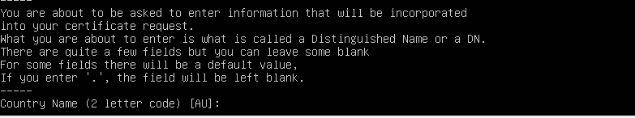

Para instalar nuestro servidor web, la segunda parte obligatoria es instalar primero todo el software necesario para su funcionamiento. En nuestro caso, instalaremos servidores SSH, FTP, Apache, MySQL y soporte de PHP para el mismo. Iremos por el orden mencionado anteriormente paso a paso

Ya nos vino instalado el propio SSH en sí cuando escogimos las opciones de configurar la máquina, asi que solo tendremos que darle a systemctl enable ssh con el sudo para que nos de los privilegios de administrador, le damos a status y veremos que está funcionando perfectamente. Así que a continuación nos meteremos con la instalación de nuestro servidor FTP Link de algo
Tras instalarlo con sudo apt install vsftpd, tendremos que configurar el siguiente archivo con sudo conf, primero lo copiaremos por si hiciéramos alguna configuración equivocada, y luego lo activaremos con ufw enable como hicimos antes
Permitiremos los siguientes puertos para que la instalación del ftp funcione sin problemas

Reiniciamos para aplicar los cambios

Tras reiniciarlo vemos que se inicio sin ningún problemas. El paso tercero lo haremos más adelante, debido a que va relacionado con el certificado de seguridad
Tras meternos en el nano conf, esto es lo que nos saldrá. Descomentamos el write y el local enable y los ponemos como YES si no lo están ya

Nos aseguramos que chroot_local_user tenga yes y esté descomentado Las siguientes configuraciones serán relativas al certificado de seguridad del servidor Poniendo ahora el tercer paso de antes, nos meteremos en la configuración del certificado de seguridad
Rellenaremos los datos que nos pidan según nos los vayan pidiendo, y tras acabar reiniciaremos de nuevo
Nos metemos de nuevo en el conf y dejamos todo exactamente como está en esta pantalla y reiniciaremos una vez másNos metemos de nuevo en el conf y dejamos todo exactamente como está en esta pantalla y reiniciaremos una vez más


Por motivos de seguridad, nos pedirá que configuremos una contraseña, tras darle a secure_installation

Elegiremos una médium, que requiere números, mayuscula y minisculas, y caracteres especiales como el * o @.
Nos dará error al ponerlo, porque no configuramos el comando al principio. Este será el primer paso que haremos

Pondremos justo este comando, que ya nos dejará entrar, aunque debemos entrar con un comando distinto. Esto por temas de seguridad, se configurará más adelante
Aqui configuramos la contraseña del root
Y hacemos que no se pueda conectar al root desde otros ordenadores distintos del host para cambios no deseados

Y recargamos los privilegios de las tablas

Entramos con el comando mysql -u root -p y nos deja entrar sin ningún problema
Lo instalamos con el comando de arriba

Y para ver la versión le daremos a php -v, que nos dice que estamos usando la 8.1.2